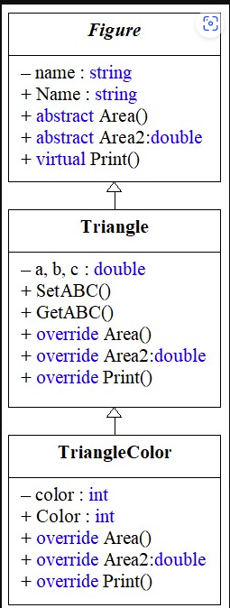

| Пример использования абстрактного класса для построения иерархий классов. | ||
| Назад | ||
|
В данной теме представлен демонстрационный пример, в котором реализована иерархия из трех классов. В вершине иерархии объявлен абстрактный класс. Класс содержит абстрактные свойства и методы. На основании данного примера можно научиться:
Содержание1. Условие задачиРазработать абстрактный класс Figure, в котором нужно реализовать следующие элементы:
Разработать класс Triangle, который наследует (расширяет) возможности класса Figure. В классе нужно реализовать следующие элементы:
Разработать класс TriangleColor, который наследует (расширяет) возможности класса Triangle. В классе реализовать следующие элементы:
2. Решение2.1. UML-диаграмма классов. РисунокИерархии создаваемых классов удобно отображать с помощью UML-диаграммы классов, которая описывает классы и отображает отношение, существующее между ними. На рисунке 1 приведена UML-диаграмма классов, которые представляют решение данной задачи.
 Рисунок 1. UML-диаграмма классов Абстрактный класс Figure и два производных Triangle и TriangleColor
2.2. Текст программы на языке C#Ниже приведен текст программы на языке C# для шаблона Console Application. using System; using System.Collections.Generic; using System.Linq; using System.Text; namespace ConsoleApplication8 { // Абстрактный класс Figure - содержит абстрактный метод Area() // и абстрактное свойство Area2 abstract class Figure { // 1. Скрытое поле класса private string name; // Название фигуры // 2. Конструктор класса public Figure(string name) { this.name = name; } // 3. Свойство доступа к полю класса public string Name { get { return name; } set { name = value; } } // 4. Абстрактное свойство, которое возвращает площадь фигуры public abstract double Area2 { get; } // 5. Абстрактный метод, который возвращает площадь фигуры // Метод не имеет тела метода public abstract double Area(); // 6. Виртуальный метод, который выводит значение полей класса public virtual void Print() { Console.WriteLine("name = {0}", name); } } // Класс, который реализует треугольник. В классе нет абстрактных методов, // поэтому слово abstract не указывается перед объявлением класса. class Triangle : Figure { // 1. Внутренние поля класса double a, b, c; // 2. Конструктор класса public Triangle(string name, double a, double b, double c) : base(name) { // Проверка на корректность значений a, b, c if (((a + b) > c) && ((b + c) > a) && ((a + c) > b)) { this.a = a; this.b = b; this.c = c; } else { Console.WriteLine("Incorrect values a, b, c."); Console.WriteLine("By default: a=1, b=1, c=1."); this.a = this.b = this.c = 1; } } // 3. Реализация методов доступа к скрытым полям a, b, c // 3.1. Установление значений полей a, b, c public void SetABC(double a, double b, double c) { if (((a + b) > c) && ((b + c) > a) && ((a + c) > b)) { this.a = a; this.b = b; this.c = c; } else { this.a = this.b = this.c = 1; } } // 3.2. Чтение значений полей - обратить внимание на модификатор out public void GetABC(out double a, out double b, out double c) { a = this.a; b = this.b; c = this.c; } // 4. Переопределение абстрактного свойства Area2 класса Figure, // ключевое слово override обязательно public override double Area2 { get { // 1. Провести вычисления double p, s; p = (a + b + c) / 2; s = Math.Sqrt(p * (p - a) * (p - b) * (p - c)); // 2. Вывести результат в свойстве - для контроля Console.WriteLine("Property Triangle.Area2: s = {0:f3}", s); // 3. Вернуть результат return s; } } // 5. Реализация метода Area(), который в классе Figure // объявлен как абстрактный public override double Area() { // 1. Провести вычисления double p, s; p = (a + b + c) / 2; s = Math.Sqrt(p * (p - a) * (p - b) * (p - c)); // 2. Вывести результат в свойстве - для контроля Console.WriteLine("Method Triangle.Area(): s = {0:f3}", s); // 3. Вернуть результат return s; } // 6. Виртуальный метод Print public override void Print() { base.Print(); Console.WriteLine("a = {0:f2}", a); Console.WriteLine("b = {0:f2}", b); Console.WriteLine("c = {0:f2}", c); } } // Класс, который определяет треугольник с цветом class TriangleColor : Triangle { // 1. Скрытое поле color private int color; // 2. Конструктор с 5 параметрами public TriangleColor(string name, double a, double b, double c, int color) : base(name, a, b, c) { // Проверка на корректность указания значения color if ((color >= 0) && (color <= 255)) this.color = color; else this.color = 0; } // 3. Свойство доступа к полю color public int Color { get { return color; } set { // Проверка на корректность указания значения color if ((color >= 0) && (color <= 255)) color = value; else color = 0; } } // 4. Свойство Area2 - вызывает одноименное // свойство базового класса. public override double Area2 { get { // 1. Предварительно вывести контрольное сообщение Console.WriteLine("Property TriangleColor.Area2:"); // 2. Вызвать свойство базового класса return base.Area2; } } // 5. Абстрактный метод Area() public override double Area() { // 1. Вывести контрольное сообщение Console.WriteLine("Method TriangleColor.Area():"); // 2. Вызвать свойство базового класса return base.Area(); } // 6. Виртуальный метод Print() public override void Print() { base.Print(); Console.WriteLine("color = {0}", color); } } class Program { static void Main(string[] args) { // Демонстрация полиморфизма с использованием // абстрактного класса. // 1. Объявить ссылку на базовый класс Figure refFg; // 2. Объявить экземпляр класса Figure // 2.1. Невозможно создать экземпляр абстрактного класса // Figure objFg = new Figure("Figure"); - ошибка! // 2.2. Объявить экземпляры классов Triangle, TriangleColor Triangle Tr = new Triangle("Triangle", 2, 3, 2); TriangleColor TrCol = new TriangleColor("TriangleColor", 1, 3, 3, 0); // 3. Демонстрация полиморфизма на примере метода Print() refFg = Tr; refFg.Print(); refFg = TrCol; refFg.Print(); // 4. Демонстрация полиморфизма на примере метода Area() refFg = Tr; refFg.Area(); // вызывается метод Triangle.Area() refFg = TrCol; refFg.Area(); // вызывается метод TriangleColor.Area() // 5. Демонстрация полиморфизма на примере свойства Area2 refFg = Tr; double area = refFg.Area2; // свойство Triangle.Area2 Console.WriteLine("area = {0:f3}", area); refFg = TrCol; area = refFg.Area2; // свойство TriangleColor.Area2 Console.WriteLine("area = {0:f3}", area); Console.ReadKey(); } } } 2.3. Результат выполнения программыname = Triangle a = 2.00 b = 3.00 c = 2.00 name = TriangleColor a = 1.00 b = 3.00 c = 3.00 color = 0 Method Triangle.Area(): s = 1.984 Method TriangleColor.Area(): Method Triangle.Area(): s = 1.479 Property Triangle.Area2: s = 1.984 area = 1.984 Property TriangleColor.Area2: Property Triangle.Area2: s = 1.479 area = 1.479
|
||
| Конспект подготовлен Бакулиным А. М. 2022 год. | ||